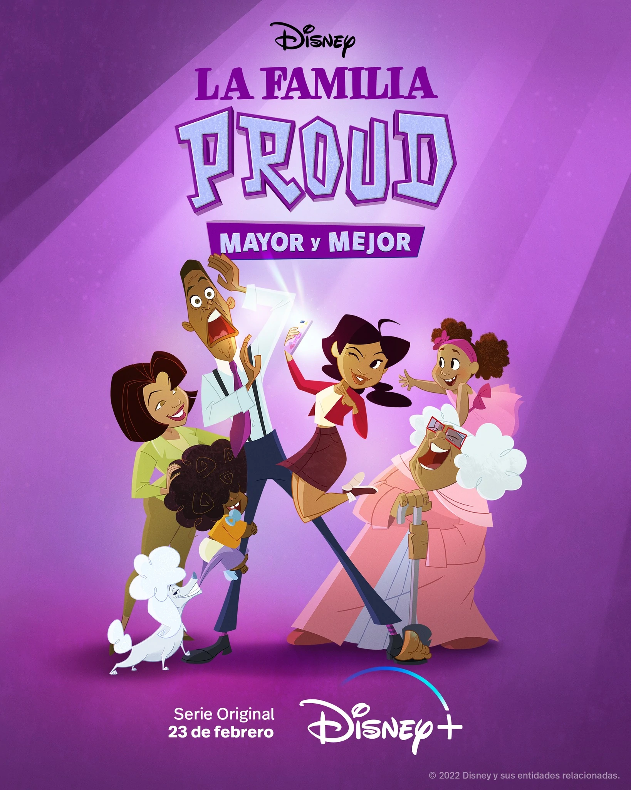
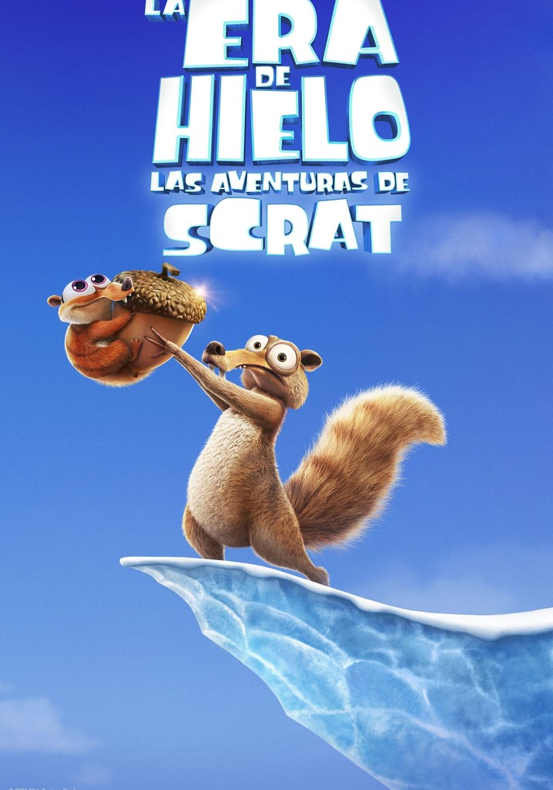

La Familia Proud
2022 Director: Ralph Farkuhar, Bruce W. Smith
Género: Comedia, Familiar, Infantil
2022
Penny Proud crece en una familia extrovertida y ruidosa con un padre demasiado protector y una madre cariñosa.
Audio: Latino
Director: Ralph Farkuhar, Bruce W. Smith
Elenco: Kyla Pratt, Keke Palmer, Asante Blackk, Tommy Davidson
Género: Comedia, Familiar, Infantil
calificacion: 6.5/10


Las Aventuras de Scrat
2022 Director: Chris Wedge
Género: Familiar, Comedia, Infantil
2022